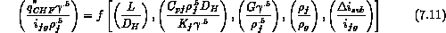
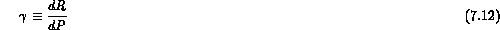
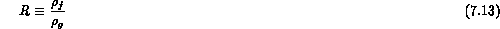
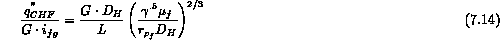

Although the general qualitative trends are similar to nonaqueous fluids (freons, liquid metals, cryogens) and water, there has been no completely successful correlation for both water and other fluids. Most experiments have been limited in scope, although the work of Stevens et al., (1964, 1966) has been fairly comprehensive. The best recommendation, if data is available for a particular fluid, is to correlate the data in a manner similar to that previously discussed in Section 7.3. If data is not available or quite limited then some scaling laws might be used. One set of scaling laws which is suggested is given by the dimensionless groups of

where


From such a set of groupings comes a suggested dimensionless form for the critical heat flux

One should be cautious in applying these estimates particularly if data is limited to check the predictions under particular conditions.